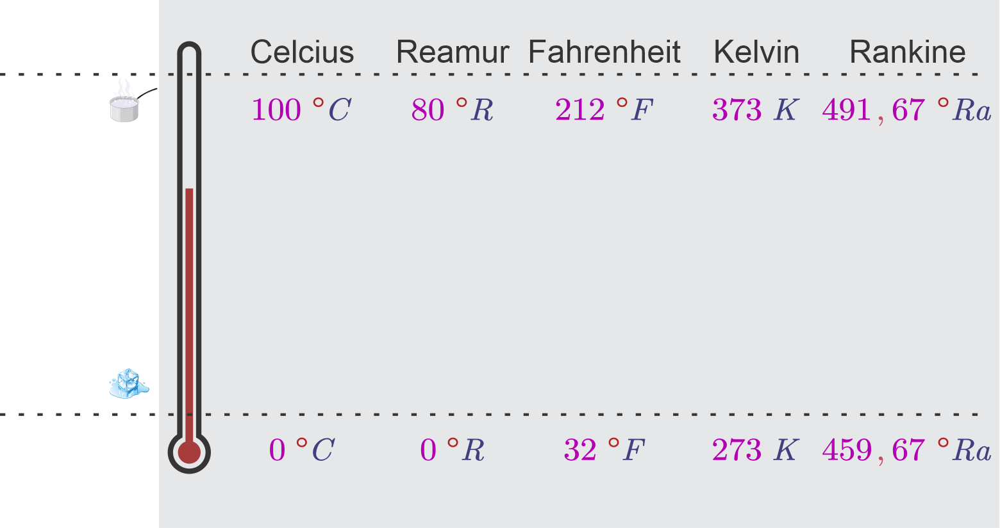
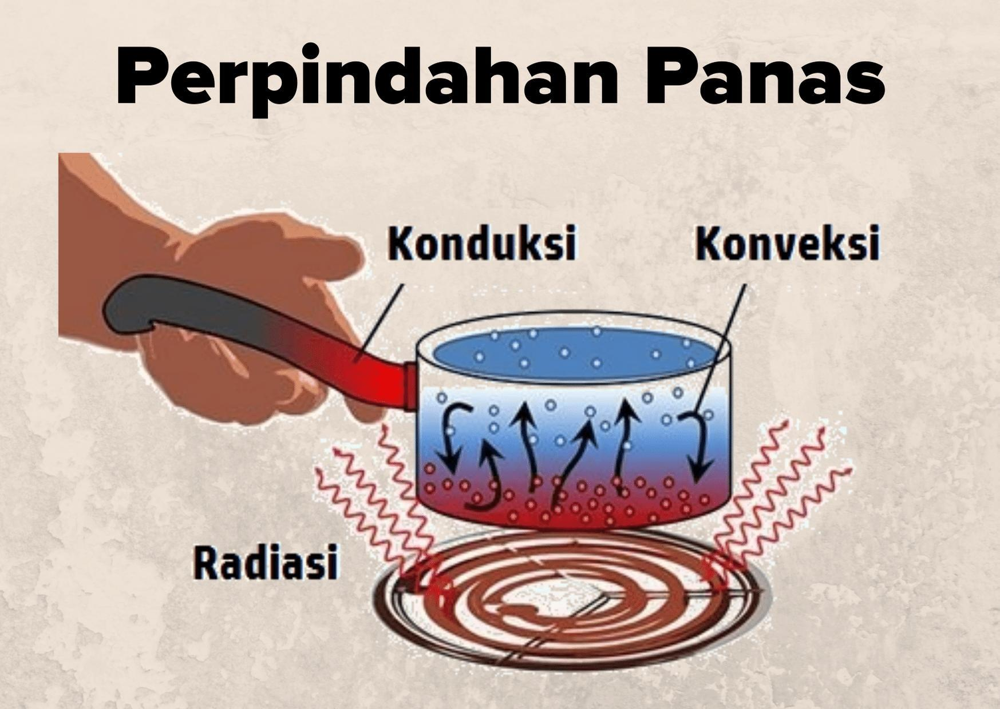

# Suhu dan Kalor --- - Suhu dan Skala-skala termometer - Muai Panjang, Muai Luas, Muai Volume - Hukum Boyle – Gay Lussac - Pengaruh Kalor Terhadap Suatu Zat - Hantaran Kalor --- ### Suhu - **Suhu/temperatur**: representasi derajat panas atau dingin suatu benda; Ukuran panas suatu benda. - Suhu merupakan kuantitas yang menggambarkan rasa-merasa kita mengenai dingin dan panas. - Suhu diukur menggunakan **Termometer**. --- ### Suhu - Satuan Internasional untuk suhu adalah **K** (*kelvin*), meskipun ada berbagai jenis skala yang dipakai, meliputi (**°C**) Celcius, (**°R**) Reamur, (**°F**) Fahrenheit, Kelvin dan (**°Ra**) Rankine. --- ### Peneraan Termometer - Benda/zat dapat berubah sifatnya bila dipanaskan/didinginkan. Salah satunya adalah perubahan volume. Benda memuai bila dipanaskan. Inilah salah satu dasar yang digunakan dalam pembuatan termometer. - Macam-macam termometer: termometer raksa, termometer gas, termometer inframerah, termometer digital, termometer bimetal. --- ### Peneraan Termometer (Celcius) - Menetapkan Titik Tetap Bawah (es mencair) dan Titik Tetap Atas (air mendidih). - Mencelupkan termometer pada es mencair dan menandainya sebagai 0°C. - Mencelupkan termometer pada air mendidih dan menandainya sebagai 100°C. - Membagi skala antara TTA dan TTB dengan seratus. - Menambahkan skala di atas TTA dan di bawah TTB. --- ### Perbandingan skala bergai jenis termometer | Skala | di es mencair | di air mendidih | besar skala | |---|---|---|---| | Celcius | 0 °C | 100 °C | 100 | | Reamur | 0 °R | 80 °R | 80 | | Fahrenheit | 32 °F | 212 °F | 180 | | Kelvin | 273 K | 373 K | 100 | | Rankine | 459.67 °Ra | 491.67 °Ra | 180 | --- ### Perbandingan skala bergai jenis termometer  --- ### Pemuaian #### Muai Linear atau Muai Panjang Secara umum suatu batang logam akan memuai atau bertambah panjang bila dipanaskan. Kita akan mengamati unsur mana saja yang mempengaruhi pertambahan panjangnya. 1. Dua buah batang logam sama jenis dan luas penampangnya juga sama, tetapi panjangnya berbeda. Keduanya dipanaskan dengan panas yang sama. Apa yang terjadi? --- Logam yang lebih panjang akan lebih besar pemuaiannya. $$\Delta L\approx L_0$$ --- 2. Dua buah batang logam sama jenis, panjang dan luas penampangnya juga sama. Keduanya dipanaskan, tetapi dengan suhu akhir yang berbeda. Apa yang terjadi? --- Logam yang suhu akhirnya lebih tinggi akan lebih besar pemuaiannya. $$\Delta L\approx \Delta T$$ --- 3. Dua buah batang logam, panjang dan luas penampangnya juga sama, tetapi berbeda jenis. Keduanya dipanaskan dengan suhu akhir yang sama. Apa yang terjadi? --- Pertambahan panjang kedua logam berbeda. Pertambahan panjang tergantung pada **koefisien muai panjang**. $$\Delta L\approx \alpha$$ --- $$\Delta L=L_0 \alpha \Delta T$$ atau ###### $$\alpha=\frac{\Delta L}{L \Delta T} $$ --- $$\Delta L=L_t-L_0$$ sehingga $$L_t-L_0=L \alpha \Delta T$$ $$L_t=L_0+L_0 \alpha \Delta T$$ ###### $$L_t=L_0(1+\alpha \Delta T)$$ --- - L<sub>t</sub> = Panjang setelah dipanaskan (m) - ΔL = Pertambahan panjang (m) - L<sub>0</sub> = Panjang mula-mula (m) - α = Koefisien muai panjang(1/°C) - ΔT = T<sub>2</sub> – T<sub>1</sub> = Kenaikan suhu (°C) --- #### Muai Luas Selain, memiliki dimensi panjang, kebanyakan benda memiliki juga dimensi luas. Bila benda dipanaskan, tidak hanya terjadi pemuaian panjangnya saja, tetapi juga luasnya. - Ambil sebuah benda dengan panjang L<sub>01</sub> dan lebar L<sub>02</sub>. - Dari persamaan muai panjang, $$L_{t1}=L_{01}(1+\alpha \Delta T)$$ $$L_{t2}=L_{02}(1+\alpha \Delta T)$$ --- - Luas benda setelah dipanasi $$\begin{split}A_{t}&=L_{t1}L_{t2}\cr &=L_{01}L_{02}(1+\alpha \Delta T)^2\cr &=A_0(1+2\alpha\Delta T+\alpha^2(\Delta T)^2)\end{split}$$ - karena α<sup>2</sup>(ΔT)<sup>2</sup> sangat kecil, maka dapat diabaikan dalam perhitungan, sehingga ###### $$A_{t}=A_0(1+\beta\Delta T)$$ ###### $$\Delta A=2\alpha A_0\Delta T=\beta A_0 \Delta T$$ --- - A<sub>t</sub> = Luas setelah dipanaskan (m<sup>2</sup>) - ΔA = Pertambahan luas (m<sup>2</sup>) - A<sub>0</sub> = Luas mula-mula (m<sup>2</sup>) - β = Koefisien muai luas(1/°C) - ΔT = T<sub>2</sub> – T<sub>1</sub> = Kenaikan suhu (°C) --- #### Muai Volume Selain, memiliki dimensi panjang dan luas, kebanyakan benda memiliki juga dimensi volume. Bila benda dipanaskan, tidak hanya terjadi pemuaian panjangnya dan luas saja, tetapi juga volumenya. - Ambil sebuah benda dengan panjang L<sub>01</sub>, lebar L<sub>02</sub>, tinggi L<sub>03</sub>.. - Dari persamaan muai panjang, $$L_{t1}=L_{01}(1+\alpha \Delta T)$$ $$L_{t2}=L_{02}(1+\alpha \Delta T)$$ $$L_{t3}=L_{03}(1+\alpha \Delta T)$$ --- - Volume benda setelah dipanasi $$\begin{split}V_{t}&=L_{t1}L_{t2}L_{t3}\cr &=L_{01}L_{02}L_{03}(1+\alpha \Delta T)^3\cr &=V_0(1+3\alpha\Delta T+3\alpha^2(\Delta T)^2+\alpha^3(\Delta T)^3)\end{split}$$ - karena 3α<sup>2</sup>(ΔT)<sup>2</sup>+α<sup>3</sup>(ΔT)<sup>3</sup> sangat kecil, maka dapat diabaikan dalam perhitungan, sehingga ###### $$V_{t}=V_0(1+\gamma\Delta T)$$ ###### $$\Delta V=3\alpha V_0\Delta T=\gamma V_0 \Delta T$$ --- - V<sub>t</sub> = Volume setelah dipanaskan (m<sup>3</sup>) - ΔV = Pertambahan volume (m<sup>3</sup>) - V<sub>0</sub> = Volume mula-mula (m<sup>3</sup>) - γ = Koefisien muai volume(1/°C) - ΔT = T<sub>2</sub> – T<sub>1</sub> = Kenaikan suhu (°C) --- ### Pemuaian Gas: Hukum Boyle – Gay Lussac - Pada pemuaian gas tidak dikenal muai panjang dan muai luas, yang ada hanyalah muai volume. Pemuaian volume pada gas dirumuskan sebagai ###### $$V_{t}=V_0(1+\gamma\Delta T)$$ - Pemuaian pada zat gas terbagi menjadi tiga macam yaitu pemuaian gas pada suhu tetap (**isotermal**), pada tekanan tetap (**isobarik**), dan volume tetap (**isokhorik**). --- #### a. Pemuaian Gas Saat Isotermal - Salah satu contoh pemuaian gas saat isotermal yaitu pompa untuk mengisi angin pada ban sepeda. Gagang pompa ketika diangkat terasa ringan, namun ketika gagang pompa diturunkan lama kelamaan semakin berat. Hal ini dikarenakan ketika menekan pompa berarti volume gas dalam pompa mengecil. Robert Boyle (1627-1691) secara eksperimen menemukan bahwa volume gas berbanding terbalik dengan tekanan yang diberikan padanya ketika suhu dijaga konstan, yaitu: --- $$V\varpropto\frac 1 P$$ Hubungan ini dikenal sebagai Hukum Boyle yang dituliskan: $$PV=konstan$$ atau ###### $$P_1V_1=P_2V_2$$ --- #### b. Pemuaian Gas Saat Isobarik - Seorang ilmuwan dari Prancis, Jacques Charles (1746-1823) menemukan bahwa ketika tekanan gas tidak terlalu tinggi dan dijaga konstan, volume gas bertambah terhadap suhu dengan kecepatan hampir konstan. Dalam bentuk persamaan dapat dituliskan sebagai berikut: --- $$V\varpropto T$$ Hubungan ini dikenal sebagai Hukum Charles yang dituliskan: $$\frac V T=konstan$$ atau ###### $$\frac{V_1}{T_1}=\frac{V_2}{T_2}$$ --- #### b. Pemuaian Gas Saat Isokhorik - Contoh nyata dalam kehidupan sehari-hari adalah botol yang tertutup atau kaleng aerosol, jika dilemparkan ke api (suhu gas naik), maka akan meledak karena naiknya tekanan gas di dalamnya. Di sini berlaku hukum Gay Lussac (Joseph Gay Lussac, 1778-1850) yaitu jika volume gas di dalam ruang tertutup dijaga tetap, maka tekanan gas sebanding dengan suhu mutlaknya. --- $$P\varpropto T$$ Hukum ini dirumuskan: $$\frac P T=konstan$$ atau ###### $$\frac{P_1}{T_1}=\frac{P_2}{T_2}$$ --- Gabungan ketiga proses itu menjadi satu hukum Boyle – Gay Lussac. ###### $$\frac{P_1V_1}{T_1}=\frac{P_2V_2}{T_2}$$ dengan: - P = tekanan gas pada suhu tetap (Pa) - V = Volume gas pada tekanan tetap (m<sup>3</sup>) - T = suhu mutlak gas pada volume tetap (K) - P<sub>1</sub>/P<sub>2</sub> = tekanan gas pada keadaan I/II (Pa) - V<sub>1</sub>/V<sub>2</sub> = volume gas pada keadaan I/II (m<sup>3</sup>) - T<sub>1</sub>/T<sub>2</sub> = suhu mutlak gas pada keadaan I/II (K) --- ### Pengaruh Kalor Terhadap Suatu Zat --- #### Panas atau Kalor Sebelumnya, kita mengetahui sebuah benda lebih panas dari benda lain dengan membandingkan suhunya. Berikutnya kita akan: - Menghitung secara kuantitatif besarnya panas atau kalor dari suatu zat dengan ukuran yang lebih tepat, yaitu *kalori*. - Memahami **hukum Joule** tentang kesetaraan kalor dan energi. - Memahami hubungan *kalori* dan *suhu*. --- #### *kalori* = satuan panas Jika kalian mengambil 1 gram air dan memanaskan air itu hingga suhunya naik 1 °C, panas yang diperlukan untuk pemanasan itu disebut 1 **kalori** --- Setiap ada perbedaan suhu antara dua sistem, maka akan terjadi perpindahan kalor. Kalor mengalir dari sistem bersuhu tinggi ke sistem yang bersuhu lebih rendah. Pengaruh kalor terhadap suatu sistem atau benda yaitu mengubah suhu dan atau wujud benda. --- #### Kalor dan Perubahan Suhu Benda - Panas jenis atau **kalor jenis**=*Jumlah kalor (Q) yang diperlukan 1 kilogram (m) benda untuk menaikkan suhu (ΔT) benda sebesar 1 °C atau 1 Kelvin*. - Kalor jenis suatu zat dinyatakan dalam satuan J/kg°C (satuan SI yang sesuai) atau kkal/kg°C. Untuk air pada suhu 15 °C dan tekanan tetap 1 atm, c<sub>air</sub> = 1 kkal/kg°C = *4,19 × 10<sup>3</sup> J/kg°C.* --- ###### $$c=\frac{Q}{m\Delta T}$$ dengan: - c = kalor jenis (J/kg°C) - Q = panas/kalor yang diperlukan (J) - m = massa benda (kg) - ΔT = T<sub>2</sub> – T<sub>1</sub> = Kenaikan suhu (°C atau K) --- - Jumlah kalor yang diperlukan untuk menaikkan suhu benda sebesar 1 °C atau 1 K disebut **kapasitas kalor** (C), dengan satuan *Joule/kg*. ###### $$C=\frac{Q}{\Delta T}=mc$$ Maka, persamaan kalor dapat juga ditulis: ###### $$Q=mc\Delta T$$ atau ###### $$Q=C\Delta T$$ --- #### Kalor dan Perubahan Wujud Zat Perubahan wujud zat bisa terjadi karena peristiwa pelepasan dan penyerapan kalor. Perubahan wujud zat terjadi ketika titik tertentu tercapai oleh atom/senyawa zat tersebut yang dikuantitaskan dalam angka suhu. Semisal air dalam kondisi tekanan normal 1 atm untuk menjadi padat harus mencapai titik bekunya yaitu pada suhu 0 °C. Air menjadi gas harus mencapai titik didihnya yaitu 100 °C. --- Kalor (Q) yang dibutuhkan untuk mengubah wujud 1 kg zat disebut kalor laten (L), secara matematis dirumuskan ###### $$L=\frac Q m$$ Keterangan: - Q = kalor (joule) - m = massa benda (kg) - L = kalor laten (J/kg) --- #### Azas Black - Apabila dua zat atau lebih mempunyai suhu yang berbeda dan terisolasi dalam suatu sistem, maka kalor akan mengalir dari zat yang suhunya lebih tinggi ke zat yang suhunya lebih rendah. Energi adalah kekal sehingga benda yang memiliki temperatur lebih tinggi akan melepaskan energi sebesar **Q<sub>L</sub>** dan benda yang memiliki temperatur lebih rendah akan menerima energi sebesar **Q<sub>T</sub>** dengan besar yang sama. Secara matematis, pernyataan tersebut dapat ditulis sebagai berikut. --- ###### $$Q_{lepas}=Q_{terima}$$ - Persamaan ini menyatakan hukum kekekalan energi pada pertukaran kalor yang disebut sebagai Asas Black, sebagai penghargaan bagi seorang ilmuwan dari Inggris bernama Joseph Black (1728-1799). --- ### Hantaran Kalor Pada sebuah benda, perpindahan kalor atau perambatan kalor terjadi dari benda yang bersuhu tinggi ke benda yang bersuhu rendah. Pada waktu memasak air, kalor berpindah dari api ke panci lalu ke air. Pada waktu menyetrika, kalor berpindah dari setrika ke pakaian. Demikian juga pada waktu berjemur, badan Anda terasa hangat karena kalor berpindah dari matahari ke badan Anda. Kalor berpindah/merambat dengan tiga cara, yakni secara *konduksi (hantaran)*, secara *konveksi (aliran)*, dan secara *radiasi (pancaran)*. ---  --- #### Konduksi - Perpindahan kalor yang tidak diikuti perpindahan massa disebut **konduksi**. - Laju kalor yang berpindah dinyatakan sebagai berikut: --- ###### $$\frac Q t=\frac{kA\Delta T}{L}$$ Keterangan: - Q = kalor (joule) - t = waktu (s) - k = konduktivitas (W/m K) - A = Luas Penampang (m<sup>2</sup>) - L = panjang konduktor (m) - ΔT = T<sub>2</sub> – T<sub>1</sub> = Selisih suhu (°C atau K) antara ujung-ujung penghantar --- Pada persambungan dua batang penghantar berlaku: ###### $$\frac{k_A A_A \Delta T}{L_A}=\frac{k_B A_B\Delta T}{L_B}$$ --- #### Konveksi - Perpindahan kalor yang disertai perpindahan massa disebut **konvkesi**. - Laju kalor konveksi sebanding dengan luas permukaan benda yang bersentuhan dengan fluida *A*, dan beda suhu antara benda dan fluida *ΔT* yang dapat ditulis dalam bentuk: --- ###### $$\frac Q t=hA\Delta T$$ Keterangan: - Q = kalor (joule) - t = waktu (s) - h = koefisien konveksi (W/m<sup>2</sup> K) - A = Luas Penampang (m<sup>2</sup>) - ΔT = T<sub>2</sub> – T<sub>1</sub> = Selisih suhu (°C atau K) benda dan fluida --- #### Radiasi - Perpindahan kalor secara radiasi *tidak memerlukan media perambatan*. Radiasi pada dasarnya terdiri dari gelombang elektro-magnetik. Hal inilah yang menyebabkan pancaran energi matahari dapat sampai ke bumi. - Kecepatan atau laju radiasi kalor dari sebuah benda sebanding dengan pangkat empat suhu mutlak (μ ∝ T<sup>4</sup>) benda tersebut dengan rumusan berikut ini. --- ###### $$\frac Q t=eA\sigma T^4$$ Keterangan: - Q = kalor (joule) - t = waktu (s) - e = Emisivitas (daya pancaran permukaan) - σ = konstanta umum (5,67 × 10<sup>−8</sup> watt/m<sup>2</sup> K<sup>4</sup> ) - A = Luas Penampang (m<sup>2</sup>) - T = suhu permukaan benda (K) --- Nilai emisivitas *e* suatu benda tergantung pada warna permukaan benda tersebut. Permukaan benda yang berwarna hitam sempurna nilai *e = 1*, sedang untuk benda yang berwarna putih sempurna nilai *e = 0*. Jadi nilai emisivitas *e* secara umum adalah **0 ≤ e ≤ 1**.